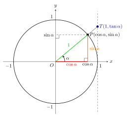

Eclats de vers : Matemat : Trigonometrie
Table des matières
1. Triangle rectangle
1.1. Indépendance
Considérons deux triangles rectangles \(ABC\) et \(XYZ\) qui possèdent un angle \(\alpha\) de même amplitude, en plus de leur angle droit. Nous avons vu dans la section qui traite de triangles possédant un angle commun que nous pouvons construire un triangle \(ADE\) isométrique à \(XYZ\), tel que les deux angles \(\alpha\) soient placés au même endroit :
On définit :
\[ a = \abs{AB} \qquad \qquad \qquad b = \abs{BC} \qquad \qquad \qquad c = \abs{CA} \]
\[ x = \abs{AD} \qquad \qquad \qquad y = \abs{DE} \qquad \qquad \qquad z = \abs{EA} \]
Deux triangles rectangles qui possèdent un angle aigu de même amplitude sont des triangles semblables. On a donc :
\[ \varphi = \frac{x}{a} = \frac{y}{b} = \frac{z}{c} \]
pour un certain réel \(\varphi\) positif. On peut réécrire ces relations sous la forme :
\[ x = \varphi \ a \]
\[ y = \varphi \ b \]
\[ z = \varphi \ c \]
Dans le triangle \(ABC\), le rapport des cathètes nous donne :
\[ \frac{b}{a} \]
Dans le triangle \(ADE\), le rapport des cathètes nous donne :
\[ \frac{y}{x} = \frac{\varphi \ b}{\varphi \ a} = \frac{b}{a} \]
On voit que ce rapport est indépendant du triangle choisi. Un raisonnement analogue nous montre la même indépendance pour le rapport entre la première cathète et l’hypothénuse :
\[ \frac{x}{z} = \frac{\varphi \ a}{\varphi \ c} = \frac{a}{c} \]
ainsi que pour le rapport entre la seconde cathète et l’hypothénuse :
\[ \frac{y}{z} = \frac{\varphi \ b}{\varphi \ c} = \frac{b}{c} \]
Lorsque l’angle \(\alpha\) est fixé, les rapports de longueurs des côtés d’un triangle rectangle sont indépendants du triangle choisi. Ces rapports ne peuvent donc dépendre que de l’angle \(\alpha\), ce qui nous incite à les définir comme des fonctions de cet angle.
1.2. Définitions
Soit le triangle rectangle :
On définit la fonction trigonométrique du sinus, notée \(\sin\), comme le rapport entre le côté opposé à l’angle avec l’hypothénuse :
\[ \sin(\alpha) = \frac{b}{c} \]
On définit la fonction trigonométrique du cosinus, notée \(\cos\), comme le rapport entre le côté adjacent à l’angle avec l’hypothénuse :
\[ \cos(\alpha) = \frac{a}{c} \]
On définit la fonction trigonométrique de tangente, notée \(\tan\), comme le rapport entre le côté opposé et le côté adjacent :
\[ \tan(\alpha) = \frac{b}{a} \]
On a aussi les rapports inversés :
- cosécante :
\[ \csc(\alpha) = \frac{c}{b} \]
- sécante :
\[ \sec(\alpha) = \frac{c}{a} \]
- cotangente :
\[ \cot(\alpha) = \frac{a}{b} \]
1.3. Notations
On note :
\[ \sin \alpha = \sin(\alpha) \]
\[ \cos \alpha = \cos(\alpha) \]
\[ \tan \alpha = \tan(\alpha) \]
et :
\[ \csc \alpha = \csc(\alpha) \]
\[ \sec \alpha = \sec(\alpha) \]
\[ \cot \alpha = \cot(\alpha) \]
1.3.1. Carrés
L’usage veut également que :
\[ \sin^2 \alpha = (\sin \alpha)^2 \]
\[ \cos^2 \alpha = (\cos \alpha)^2 \]
\[ \tan^2 \alpha = (\tan \alpha)^2 \]
et ainsi de suite. J’évite autant que possible cette notation dans cet ouvrage, car elle n’est pas cohérente avec la notation générale des fonctions qui veut que :
\[ f^2(x) = (f \circ f)(x) \ne [f(x)]^2 = f(x) \cdot f(x) \]
1.4. Corollaires
En multipliant la définition du cosinus par \(c\), on obtient :
\[ a = c \ \cos \alpha \]
En multipliant la définition du sinus par \(c\), on obtient :
\[ b = c \ \sin \alpha \]
1.5. Inverses multiplicatifs
On remarque que la cosécante est l’inverse du sinus :
\[ \csc\alpha = \frac{c}{b} = \frac{1}{b/c} = \unsur{\sin\alpha} \]
La sécante est l’inverse du cosinus :
\[ \sec\alpha = \frac{c}{a} = \frac{1}{a/c} = \unsur{\cos\alpha} \]
La cotangente est l’inverse de la tangente :
\[ \cot\alpha = \frac{a}{b} = \frac{1}{b/a} = \unsur{\tan\alpha} \]
1.6. Angle complémentaire
Comme le triangle est rectangle, on a :
\[ \alpha + \beta = \frac{\pi}{2} \]
ou :
\[ \beta = \frac{\pi}{2} - \alpha \]
Le rapport entre le côté adjacent à \(\beta\) et l’hypothénuse nous donne :
\[ \cos \beta = \frac{b}{c} = \sin \alpha \]
c’est-à-dire :
\[ \cos\left(\frac{\pi}{2} - \alpha\right) = \sin \alpha \]
Le rapport entre le côté opposé à \(\beta\) et l’hypothénuse nous donne :
\[ \sin \beta = \frac{a}{c} = \cos \alpha \]
c’est-à-dire :
\[ \sin\left(\frac{\pi}{2} - \alpha\right) = \cos \alpha \]
Le rapport entre le côté opposé et le côté adjacent à \(\beta\) nous donne :
\[ \tan \beta = \frac{a}{b} = \unsur{b/a} = \unsur{\tan \alpha} \]
c’est-à-dire :
\[ \tan\left(\frac{\pi}{2} - \alpha\right) = \unsur{\tan \alpha} \]
2. Cercle trigonométrique
2.1. Premier quadrant
Le cercle trigonométrique permet de généraliser la définition des fonctions trigonometriques au-delà de l’intervalle \([0,\pi/2]\) :

Ce cercle est un cercle unitaire, c’est-à-dire de rayon \(1\), et permet de générer un triangle rectangle dont l’hypothénuse vaut \(1\) pour chaque angle \(\alpha\). La figure ci-dessus en illustre un exemple. Les deux autres côtés sont alors de longueurs :
\[ a = 1 \cdot \cos \alpha = \cos \alpha \]
\[ b = 1 \cdot \sin \alpha = \sin \alpha \]
Ces longueurs correspondent aussi aux coordonnées du point \(P\) qui valent :
\[ (\cos \alpha, \sin \alpha) \]
dans le système d’axes \((O,x,y)\). Ces coordonnées peuvent varier entre \(-1\) et \(1\), tout comme les valeurs des fonctions \(\cos\) et \(\sin\).
On en déduit les valeurs des fonctions trigonométriques \(\cos\) et \(\sin\) pour n’importe quel angle entre \(0\) et \(2\pi\).
2.2. Deuxième quadrant
Le schéma ci-dessous illustre le cas du deuxième quadrant, c’est-à-dire de l’ntervalle \([\pi/2,\pi]\).
On en déduit que :
\[ \cos(\alpha+\pi/2) = - \sin(\alpha) \]
\[ \sin(\alpha+\pi/2) = \cos(\alpha) \]
Pour la tangente, on a :
\[ \tan(\alpha + \pi/2) = \frac{\sin(\alpha + \pi/2)}{\cos(\alpha + \pi/2)} = \frac{\cos\alpha}{-\sin\alpha} = \frac{-1}{\sin\alpha / \cos\alpha} = \frac{-1}{\tan\alpha} \]
2.3. Troisième quadrant
Le schéma ci-dessous illustre le cas du troisième quadrant, c’est-à-dire de l’ntervalle \([\pi,3\pi/2]\).
On en déduit que :
\[ \cos(\alpha+\pi) = - \cos(\alpha) \]
\[ \sin(\alpha+\pi) = - \sin(\alpha) \]
Pour la tangente, on a :
\[ \tan(\alpha + \pi) = \frac{\sin(\alpha + \pi)}{\cos(\alpha + \pi)} = \frac{-\sin\alpha}{-\cos\alpha} = \frac{\sin\alpha}{\cos\alpha} = \tan\alpha \]
2.4. Quatrième quadrant
Le schéma ci-dessous illustre le cas du quatrième quadrant, c’est-à-dire de l’ntervalle \([3\pi/2,2\pi]\).
On en déduit que :
\[ \cos(\alpha+3\pi/2) = \sin(\alpha) \]
\[ \sin(\alpha+3\pi/2) = - \cos(\alpha) \]
Pour la tangente, on a :
\[ \tan(\alpha + 3\pi/2) = \frac{\sin(\alpha + 3\pi/2)}{\cos(\alpha + 3\pi/2)} = \frac{-\cos\alpha}{\sin\alpha} = \frac{-1}{\sin\alpha / \cos\alpha} = \frac{-1}{\tan\alpha} \]
2.5. Angle supplémentaire
Le schéma ci-dessus nous montre que :
\[ \cos(\pi - \alpha) = - \cos \alpha \]
\[ \sin(\pi - \alpha) = \sin \alpha \]
Pour la tangente, on a :
\[ \tan(\pi - \alpha) = \frac{\sin(\pi - \alpha)}{\cos(\pi - \alpha)} = \frac{\sin\alpha}{-\cos\alpha} = - \tan\alpha \]
2.6. Angles négatifs
Le schéma ci-dessous illustre le cas d’angles négatifs.
On a clairement :
\[ \cos(-\alpha) = \cos(\alpha) \]
\[ \sin(-\alpha) = - \sin(\alpha) \]
Pour la tangente, on a :
\[ \tan(-\alpha) = \frac{\sin(-\alpha)}{\cos(-\alpha)} = \frac{-\sin\alpha}{\cos\alpha} = - \tan\alpha \]
2.7. Généralisation à n’importe quel angle réel
On considère qu’ajouter un nombre entier de tours complets (multiple entier de \(2\pi\)) ne change rien aux fonctions trigonométriques. On a donc :
\[ \cos(\alpha+2 \ \pi \ k) = \cos \alpha \]
\[ \sin(\alpha+2 \ \pi \ k) = \sin \alpha \]
pour tout \(k \in \setZ\). Ce constat permet de couvrir l’ensemble des angles à amplitude réelle.
3. Relations fondamentales
3.1. Préambule
Soit le triangle rectangle :
3.2. Sinus et cosinus
Le théorème de Pythagore dans notre triangle rectangle nous donne :
\[ a^2 + b^2 = c^2 \]
Mais comme :
\[ a = c \ \cos \alpha \]
\[ b = c \ \sin \alpha \]
la première relation devient :
\[ c^2 \ (\cos \alpha)^2 + c^2 \ (\sin \alpha)^2 = c^2 \]
On peut mettre \(c^2\) en évidence :
\[ c^2 \ \left[(\cos \alpha)^2 + (\sin \alpha)^2\right] = c^2 \]
puis diviser par \(c^2\) les deux membres, ce qui nous donne la relation fondamentale entre sinus et cosinus :
\[ (\cos \alpha)^2 + (\sin \alpha)^2 = 1 \]
3.3. Tangente
On a :
\[ \tan \alpha = \frac{b}{a} = \frac{b}{c} \cdot \frac{c}{a} = \frac{b/c}{a/c} \]
Par définition des sinus et cosinus, on a donc :
\[ \tan \alpha = \frac{\sin \alpha}{\cos \alpha} \]
3.4. Tangente et cosinus
Soit un angle \(\alpha\) et :
\[ s = \sin\alpha \]
\[ c = \cos\alpha \]
\[ t = \tan\alpha \]
Les relations fondamentales nous donnent :
\[ s^2 + c^2 = 1 \]
et :
\[ t = \frac{s}{c} \]
ou encore :
\[ t^2 = \frac{s^2}{c^2} \]
Divisons la relation :
\[ s^2 + c^2 = 1 \]
par \(c^2\). Il vient :
\[ \frac{s^2}{c^2} + 1 = \unsur{c^2} \]
c’est-à-dire :
\[ t^2 + 1 = \unsur{c^2} \]
Autrement dit :
\[ (\tan\alpha)^2 + 1 = \unsur{(\cos\alpha)^2} \]
3.5. Cotangente
On a :
\[ \cot \alpha = \frac{a}{b} = \frac{a}{c} \cdot \frac{c}{b} = \frac{a/c}{b/c} \]
Par définition des sinus et cosinus, on a donc :
\[ \tan \alpha = \frac{\cos \alpha}{\sin \alpha} \]
3.6. Cotangente et sinus
Soit un angle \(\alpha\) et :
\[ s = \sin\alpha \]
\[ c = \cos\alpha \]
\[ u = \cot\alpha \]
Les relations fondamentales nous donnent :
\[ s^2 + c^2 = 1 \]
et :
\[ u = \frac{c}{s} \]
ou encore :
\[ u^2 = \frac{c^2}{s^2} \]
Divisons la relation fondamentale :
\[ s^2 + c^2 = 1 \]
par \(s^2\). Il vient :
\[ 1 + \frac{c^2}{s^2} = \unsur{s^2} \]
c’est-à-dire :
\[ 1 + u^2 = \unsur{s^2} \]
Autrement dit :
\[ 1 + (\cot\alpha)^2 = \unsur{(\sin\alpha)^2} \]
4. Sinus et cosinus en fonction de la tangente
4.1. Préambule
Soit un angle \(\alpha\). Posons :
\[ s = \sin \alpha \]
\[ c = \cos \alpha \]
\[ t = \tan \alpha \]
Nous allons utiliser les relations fondamentales :
\[ t = s / c \]
\[ s^2 + c^2 = 1 \]
pour obtenir une expression du sinus et du cosinus comme fonction de la tangente uniquement. En prenant le carré de la première équation ci-cessus, on a :
\[ t^2 = s^2 / c^2 \]
Remarquons aussi que la relation fondamentale entre sinus et coinus peur se réécrire, au choix, comme :
\[ s^2 = 1 - c^2 \]
ou comme :
\[ c^2 = 1 - s^2 \]
4.2. Sinus en fonction de la tangente
On a :
\[ t^2 = \frac{s^2}{c^2} = \frac{s^2}{1 - s^2} \]
Multiplions par \(1 - s^2\) :
\[ (1 - s^2) \ t^2 = s^2 \]
Distribuons :
\[ t^2 - s^2 \ t^2 = s^2 \]
et passons tous les termes en \(s^2\) du même côté :
\[ t^2 = s^2 + s^2 \ t^2 \]
Mettons \(s^2\) en évidence :
\[ t^2 = (1 + t^2) \ s^2 \]
En isolant \(s^2\), on obtient :
\[ s^2 = \frac{t^2}{1 + t^2} \]
c’est-à-dire :
\[ (\sin \alpha)^2 = \frac{(\tan \alpha)^2}{1 + (\tan \alpha)^2} \]
On a donc soit :
\[ \sin \alpha = \sqrt{\frac{(\tan \alpha)^2}{1 + (\tan \alpha)^2}} \]
ou :
\[ \sin \alpha = - \sqrt{\frac{(\tan \alpha)^2}{1 + (\tan \alpha)^2}} \]
ce que l’on note sous la forme :
\[ \sin \alpha = \pm \sqrt{\frac{(\tan \alpha)^2}{1 + (\tan \alpha)^2}} \]
4.3. Cosinus en fonction de la tangente
On a :
\[ t^2 = \frac{s^2}{c^2} = \frac{1 - c^2}{c^2} \]
Multiplions par \(c^2\) :
\[ c^2 \ t^2 = 1 - c^2 \]
et passons tous les termes en \(c^2\) du même côté :
\[ c^2 + c^2 \ t^2 = 1 \]
Mettons \(c^2\) en évidence :
\[ (1 + t^2) \ c^2 = 1 \]
En isolant \(c^2\), on obtient :
\[ c^2 = \frac{1}{1 + t^2} \]
c’est-à-dire :
\[ (\cos \alpha)^2 = \frac{1}{1 + (\tan \alpha)^2} \]
On a donc soit :
\[ \cos \alpha = \unsur{\sqrt{1 + (\tan \alpha)^2}} \]
ou :
\[ \cos \alpha = \frac{-1}{\sqrt{1 + (\tan \alpha)^2}} \]
ce que l’on note sous la forme :
\[ \cos \alpha = \frac{\pm 1}{\sqrt{1 + (\tan \alpha)^2}} \]
5. Loi des sinus
5.1. Raisonnement
Soit un triangle quelconque. On peut toujours le décomposer en deux triangles rectangles en traçant une hauteur \(h\), comme suit :
On définit :
\[ a = \abs{BC} \qquad \qquad \qquad b = \abs{CA} \qquad \qquad \qquad c = \abs{AB} \]
Dans le triangle rectangle de gauche, nous avons :
\[ h = b \ \sin \alpha \]
Dans le triangle rectangle de droite, nous avons :
\[ h = a \ \sin \beta \]
On en déduit que :
\[ a \ \sin \beta = b \ \sin \alpha \]
Divisons par \(\sin\alpha \ \sin\beta\) :
\[ \frac{a}{\sin \alpha} = \frac{b}{\sin \beta} \]
On peut aussi tracer la hauteur perpendiculaire au côté \(b\) et suivre un raisonnement similaire, qui nous donne :
\[ a \ \sin \gamma = c \ \sin \alpha \]
c’est-à-dire :
\[ \frac{a}{\sin \alpha} = \frac{c}{\sin \gamma} \]
On a donc finalement la loi des sinus qui englobe les trois côtés :
\[ \frac{a}{\sin \alpha} = \frac{b}{\sin \beta} = \frac{c}{\sin \gamma} \]
5.2. Corollaire
Multiplions la relation :
\[ \frac{a}{\sin \alpha} = \frac{b}{\sin \beta} \]
par \((\sin \alpha) / b\). Il vient :
\[ \frac{a}{b} = \frac{\sin \alpha}{\sin \beta} \]
En utilisant un raisonnement similaire avec les autres relations de la loi des sinus, on obtient :
\[ \frac{a}{c} = \frac{\sin \alpha}{\sin \gamma} \]
et :
\[ \frac{b}{c} = \frac{\sin \beta}{\sin \gamma} \]
6. Loi des cosinus
6.1. Triangle acutangle
Soit un triangle acutangle quelconque. On peut toujours le décomposer en deux triangles rectangles comme suit :
On définit :
\[ a = \abs{BC} \qquad \qquad \qquad b = \abs{CA} \qquad \qquad \qquad c = \abs{AB} \]
\[ u = \abs{AD} \qquad \qquad \qquad v = \abs{DB} \]
Dans le triangle rectangle \(ADC\), nous avons :
\[ u = b \ \cos \alpha \]
\[ h = b \ \sin \alpha \]
Appliquons à présent le théorème de Pythagore au triangle rectangle \(DBC\) :
\[ a^2 = h^2 + v^2 \]
Comme $ c = u + v $, on a :
\[ v = c - u \]
et :
\[ a^2 = h^2 + (c - u)^2 \]
En tenant compte des relations trigonométriques, cette équation devient :
\[ a^2 = b^2 \ (\sin \alpha)^2 + (c - b \ \cos \alpha)^2 \]
Appliquons la formule de distribution du carré parfait :
\[ a^2 = b^2 \ (\sin \alpha)^2 + c^2 - 2 \ b \ c \ \cos \alpha + b^2 \ (\cos \alpha)^2 \]
et mettons \(b^2\) en évidence :
\[ a^2 = b^2 \left[(\sin \alpha)^2 + (\cos \alpha)^2 \right] + c^2 - 2 \ b \ c \ \cos \alpha \]
Par la relation fondamentale du sinus et du cosinus, la somme entre crochets vaut toujours 1, et on a finalement :
\[ a^2 = b^2 + c^2 - 2 \ b \ c \ \cos \alpha \]
Un raisonnement similaire nous donne un résultat analogue pour les autres côtés :
\[ b^2 = a^2 + c^2 - 2 \ a \ c \ \cos \beta \]
\[ c^2 = a^2 + b^2 - 2 \ a \ b \ \cos \gamma \]
6.1.1. Cas particulier
Dans le cas particulier où \(\gamma\) est un angle droit, le cosinus s’annule et on retrouve le théorème de Pythagore :
\[ c^2 = a^2 + b^2 \]
La loi des cosinus est donc une généralisation du théorème de Pythagore à un triangle quelconque.
6.2. Triangle obtusangle
Soit un triangle acutangle \(ABC\) quelconque et sa hauteur \(h\), partant du sommet \(A\) et nécessitant une prolongation du côté opposé :
Dans le triangle rectangle \(BDC\), nous avons :
\[ u = a \ \cos \theta \]
\[ h = a \ \sin \theta \]
Appliquons à présent le théorème de Pythagore au triangle rectangle \(ADC\) :
\[ b^2 = h^2 + (c + u)^2 \]
En tenant compte des relations trigonométriques, cette équation devient :
\[ b^2 = a^2 \ (\sin \theta)^2 + (c + a \ \cos \theta)^2 \]
Appliquons la formule de distribution du carré parfait :
\[ b^2 = a^2 \ (\sin \theta)^2 + c^2 + 2 \ a \ c \ \cos \theta + a^2 \ (\cos \theta)^2 \]
et mettons \(a^2\) en évidence :
\[ b^2 = a^2 \left[(\sin \theta)^2 + (\cos \theta)^2 \right] + c^2 + 2 \ a \ c \ \cos \theta \]
Par la relation fondamentale du sinus et du cosinus, la somme entre crochets vaut toujours 1, et on a finalement :
\[ b^2 = a^2 + c^2 + 2 \ a \ c \ \cos \theta \]
Comme \(\theta\) et \(\beta\) forment ensemble un angle plat on a :
\[ \beta + \theta = \pi \]
c’est-à-dire :
\[ \theta = \pi - \beta \]
On en déduit que :
\[ \cos \theta = \cos(\pi - \beta) = - \cos \beta \]
En tenant compte de cette identité, l’expression de \(b^2\) devient :
\[ b^2 = a^2 + c^2 - 2 \ a \ c \ \cos \beta \]
équation identique à celle obtenue pour la loi des cosinus dans un triangle acutangle.
En ce qui concerne les deux autres côtés, on peut appliquer le même raisonnement que dans un triangle acutangle, ce qui nous donne :
\[ a^2 = b^2 + c^2 - 2 \ b \ c \ \cos \alpha \]
\[ c^2 = a^2 + b^2 - 2 \ a \ b \ \cos \gamma \]
7. Fonctions trigonométriques réciproques
7.1. Arc sinus
Les fonctions trigonométriques ne sont pas directement inversibles. Soit un certain \(y \in [-1,1]\) et la valeur \(x \in \setR\) solution du problème :
\[\sin(x) = y\]
Comme la fonction \(\sin\) est périodique de période \(2 \ \pi\), on a :
\[\sin(x + 2 \ k \ \pi) = \sin(x) = y\]
pour tout \(k \in \setN\). L'ensemble des solutions inclut donc l’ensemble :
\[ S = \{ x + 2 \ \pi \ k : k \in \setN \} \]
qui admet une infinité d’éléments. On ne peut donc pas déduire une seule valeur de \(x\) à partir d’une valeur de \(y\). Par contre, l’ensemble des solutions ne contient qu’une seule valeur de \(x\) dans l’invervalle \([-\pi/2,\pi/2]\), et on peut définir la fonction arc sinus, notée \(\arcsin\), par :
\[ \arcsin(y) = x \qquad \Leftrightarrow \qquad \left\lbrace \begin{array}{l} y = \sin(x) \\ x \in [-\pi/2,\pi/2] \end{array} \right. \]
On note abusivement :
\[ \sin^{-1} = \arcsin \]
On utilise aussi la notation sans parenthèse, comme pour les autres fonctions trigonometriques :
\[ \arcsin y = \arcsin(y) \]
On a :
\[ \sin\arcsin y = \sin x = y \]
pour tout \(y \in [-1,1]\).
7.2. Arc cosinus
Soit un certain \(y \in [-1,1]\) et la valeur \(x \in \setR\) solution du problème :
\[\cos(x) = y\]
Comme la fonction \(\cos\) est périodique, on ne peut pas déduire une seule valeur de \(x\) à partir d’une valeur de \(y\). Par contre, l’ensemble des solutions ne contient qu’une seule valeur de \(x\) dans l’invervalle \([0,\pi]\), et on peut définir la fonction arc cosinus, notée \(\arccos\), par :
\[ \arccos(y) = x \qquad \Leftrightarrow \qquad \left\lbrace \begin{array}{l} y = \cos(x) \\ x \in [0,\pi] \end{array} \right. \]
On note abusivement :
\[ \cos^{-1} = \arccos \]
On utilise aussi la notation sans parenthèse, comme pour les autres fonctions trigonometriques :
\[ \arccos y = \arccos(y) \]
On a :
\[ \cos\arccos y = \cos x = y \]
pour tout \(y \in [-1,1]\).
7.3. Arc tangente
Soit un certain \(y \in \setR\) et la valeur \(x \in \setR\) solution du problème :
\[\tan(x) = y\]
Comme la fonction \(\tan\) est périodique, on ne peut pas déduire une seule valeur de \(x\) à partir d’une valeur de \(y\). Par contre, l’ensemble \(S\) ne contient qu’une seule valeur de \(x\) dans l’invervalle \(\intervalleouvert{-\pi/2}{\pi/2}\), et on peut définir la fonction arc tangente, notée \(\arctan\), par :
\[ \arctan(y) = x \qquad \Leftrightarrow \qquad \left\lbrace \begin{array}{l} y = \tan(x) \\ x \in \intervalleouvert{-\pi/2}{\pi/2} \end{array} \right. \]
On note abusivement :
\[ \tan^{-1} = \arctan \]
On utilise aussi la notation sans parenthèse, comme pour les autres fonctions trigonometriques :
\[ \arctan y = \arctan(y) \]
On a :
\[ \tan\arctan y = \tan x = y \]
pour tout \(y \in \setR\).